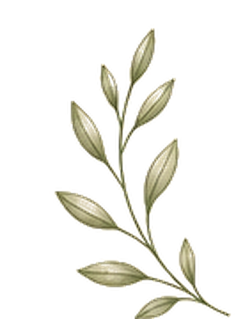
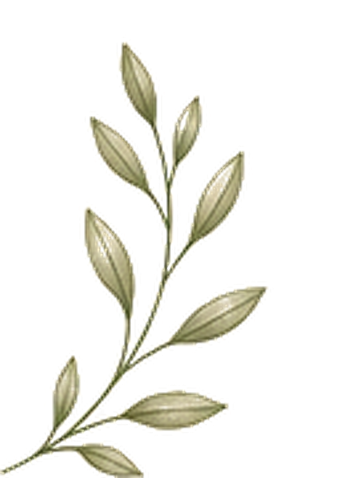
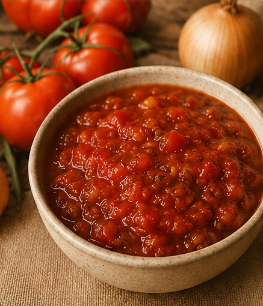

GRAN'S TOMATO RELISH
Credit: Janice Richardson
Ingredients
| Base | 1.5x | |
|---|---|---|
| Tomatoes, chopped | 3 kg | 4½ kg |
| Onions, chopped | 1 kg | 1½ kg |
| Salt | 2 tbsp | 3 tbsp |
| Sugar | 1 kg | 1½ kg |
| Curry powder | 2 tbsp | 3 tbsp |
| Mustard powder | 3 tbsp | 4½ tbsp |
| Cayenne pepper | 1 tsp | heaped tsp |
| Ground ginger | 1 tsp | heaped tsp |
| White vinegar | 2 cups | 3 cups |

Method
- Sprinkle salt over chopped tomatoes and onions, mix through thoroughly, and stand overnight.
- Next morning, pour off the liquid.
- In a large pot, boil together the sugar, curry powder, mustard powder, cayenne pepper, ginger, and white vinegar for 10 minutes.
- Add the drained tomatoes and onions and boil for 1 hour, stirring occasionally.
- Put the mixture through a moulee using a large-size strainer.
- Bottle into sterilised bottles while hot.
- Sterilise jars separately before bottling.
- Warm jars for 15 minutes at 110°C, then reduce to 50°C and keep warm until needed.